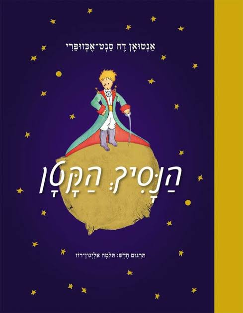

״הנסיך הקטן״ מזמין את קוראיו למסע בין כוכבים רחוקים ושאלות קרובות מאוד על חברות, אהבה, אחריות, בדידות ועל הדברים החשובים באמת. מתוך העולם העשיר הזה נולדה תוכנית לימודים שנתית, פעילה ורב־תחומית, המבוססת על תרגומה הנפלא של תלמה אליגון־רוז.

התוכנית מיועדת בעיקר לתלמידי כיתות ד׳–ו׳, ולמורות ולמורים המבקשים להפוך את הקריאה בספר לנקודת מוצא ללמידה רחבה, סקרנית ומשמעותית. אפשר ללמד אותה כתוכנית שנתית מלאה, לבחור מתוכה פרקים ופעילויות, או להתאים אותה לגיל התלמידים, לתחומי העניין של הכיתה ולקצב הלמידה.
בכל שבוע נקרא יחד פרק או שניים, וכל תחנה במסעו של הנסיך תפתח בפנינו דרך חדשה לחקור, ליצור, להתנסות, להתווכח ולשאול.
כך ננווט בעזרת כוכב הצפון, נחקור את מדבר הסהרה ואת עצי הבאובב, נפגוש את חלוצי התעופה ונגלה מה קורה כשצועדים בקו ישר על פני כוכב עגול. נחבר בין ספרות, מדעים, מתמטיקה, אסטרונומיה, היסטוריה, אמנות, פילוסופיה וטכנולוגיה, ונשלב ניסויים, משימות חקר, יצירה, דיבייטים וסימולציות.
אבל המסע אינו עוסק רק במה שאפשר לדעת. לצד החקר וההתנסות נעצור גם לשאלות שאין להן תמיד תשובה אחת: מה הופך אדם או מקום ליקר לנו? מהי אחריות? מדוע אנחנו זקוקים להכרה? איך נוצרים סטריאוטיפים? ומה אנחנו עלולים להחמיץ כשאנחנו מסתכלים על העולם רק בדרך אחת?
באתר מרוכזות התחנות השונות במסע, לצד הפעילויות, חומרי הלמידה והרעיונות שנולדו מתוך כל פרק. אפשר לצעוד בו לפי סדר הספר או לבחור בכל פעם תחנה אחרת.
נקרא, נחקור, נתנסה ונגלה כמה רחוק אפשר להגיע כשלא הולכים רק ישר קדימה.
מפת המסע שלפניכם מציגה את התחנות שילוו אותנו לאורך הספר - ואת השאלות, הרעיונות והעולמות שנפתחים בכל אחת מהן.